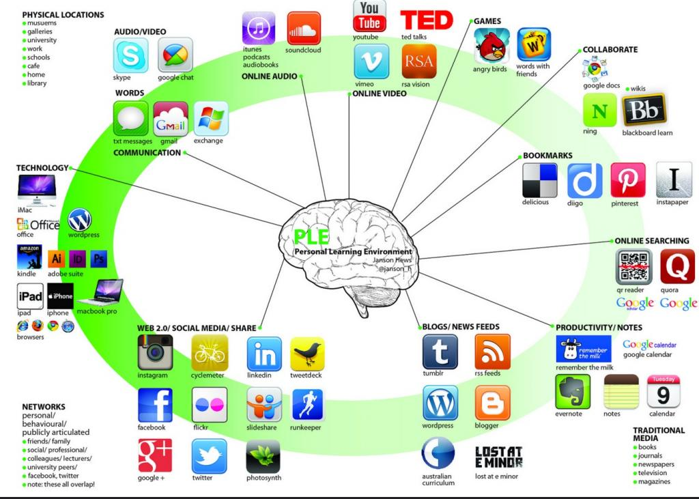
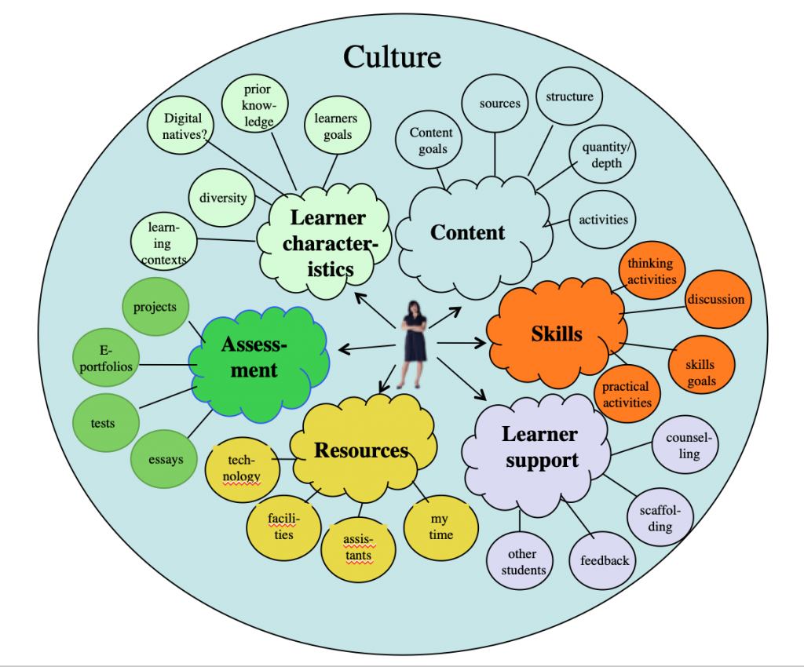

6.2 O que é um ambiente de aprendizagem?

Imagem: Jason Hews, Flickr

6.2.1 Definição
O termo “ambiente de aprendizagem” refere-se aos diversos locais físicos, contextos e culturas nos quais os estudantes aprendem. Uma vez que os estudantes podem aprender em uma grande variedade de ambientes, tais como locais fora da escola e ambientes ao ar livre, o termo é frequentemente utilizado como uma alternativa mais precisa ou preferível a “sala de aula”, que tem conotações mais limitadas e tradicionais — uma sala com fileiras de carteiras e um quadro-negro, por exemplo.
O termo engloba também a cultura de uma escola ou turma — o seu espírito e características dominantes, incluindo a forma como os indivíduos interagem e se tratam uns aos outros —, bem como as formas através das quais os professores podem organizar um ambiente educativo para facilitar a aprendizagem...
The Glossary of Educational Reform, 29 de agosto de 2014
Esta definição reconhece que os estudantes aprendem de muitas formas diferentes e em contextos muito diversos. Uma vez que cabe aos aprendizes realizar a aprendizagem, o objetivo é criar um ambiente total de aprendizagem que otimize a capacidade de estudo dos alunos. Evidentemente, não existe um ambiente de aprendizagem ideal único. Existe um número infinito de ambientes de aprendizagem possíveis, o que torna o ensino tão interessante.
6.2.2 Tipos de ambientes de aprendizagem
Eis alguns exemplos de diferentes ambientes de aprendizagem:
- um campus escolar ou universitário
- um curso on-line
- treinamento militar
- amigos, família e trabalho
- a natureza
- ambientes de aprendizagem pessoais, baseados na tecnologia
6.2.3 Componentes de um ambiente de aprendizagem eficaz
O desenvolvimento de um ambiente de aprendizagem total para os estudantes de uma determinada disciplina ou programa é provavelmente a parte mais criativa do ensino. Embora exista uma tendência para focar nos ambientes de aprendizagem institucionais físicos (como salas de aula, auditórios e laboratórios) ou nas tecnologias utilizadas para criar ambientes de aprendizagem on-line (como sistemas de gestão de aprendizagem), os ambientes de aprendizagem são mais amplos do que apenas estes componentes físicos. Eles também incluirão:
- as características dos aprendizes e os seus meios de intercomunicação;
- os objetivos de ensino e aprendizagem;
- as atividades que apoiam a aprendizagem;
- os recursos disponíveis, tais como livros didáticos, tecnologia ou espaços de aprendizagem;
- as estratégias de avaliação que melhor medirão e impulsionarão a aprendizagem;
- a cultura que impregna o ambiente de aprendizagem.



A Figura 6.2.2 ilustra um possível ambiente de aprendizagem sob a perspectiva de um professor ou instrutor. Um professor pode ter pouco ou nenhum controle sobre alguns componentes, como as características dos alunos ou os recursos, mas pode ter controle total sobre outros, como a escolha dos conteúdos e a forma como os estudantes receberão suporte. Dentro de cada um dos componentes principais, existe um conjunto de subcomponentes que precisarão de ser considerados. De fato, é nos subcomponentes (estrutura de conteúdos, atividades práticas, feedback, utilização de tecnologia, métodos de avaliação, etc.) que as decisões reais precisam ser tomadas.
Listei apenas alguns componentes na Figura 6.2.2 e o conjunto não pretende ser exaustivo. Por exemplo, poderia ter incluído outros componentes, como o desenvolvimento de um comportamento ético, fatores institucionais ou acreditação externa, cada um dos quais também poderia afetar o ambiente de aprendizagem no qual um professor ou instrutor tem de trabalhar. A criação de um modelo de ambiente de aprendizagem é, assim, um recurso heurístico que visa proporcionar uma visão abrangente de todo o contexto de ensino para um determinado curso ou programa, por um professor específico com uma visão particular sobre a aprendizagem. Mais uma vez, a escolha dos componentes e a importância que lhes é atribuída serão impulsionadas, em certa medida, por epistemologias pessoais e crenças sobre o conhecimento, a aprendizagem e os métodos de ensino.
Por fim, sugeri deliberadamente um ambiente de aprendizagem sob a perspectiva do professor, uma vez que este tem a responsabilidade principal de criar um ambiente de aprendizagem adequado; mas também é importante considerar os ambientes de aprendizagem sob a perspectiva dos estudantes. De fato, os aprendizes adultos ou maduros são frequentemente capazes de criar os seus próprios ambientes de aprendizagem pessoais, relativamente autônomos.
O ponto significativo é que é importante identificar os componentes que precisam ser considerados no ensino de uma disciplina ou programa. Em particular, que existem outros componentes além do conteúdo ou do currículo. Cada um dos componentes fundamentais do ambiente de aprendizagem que escolhi como exemplo é discutido brevemente nas seções seguintes, com foco nos componentes de um ambiente de aprendizagem que são particularmente relevantes para a era digital.
Atividade 6.2 Influenciando um ambiente de aprendizagem
- Por que razão você acha que me foquei nos ambientes de aprendizagem sob a perspectiva do professor e não do estudante? Poderia projetar um modelo semelhante de ambiente de aprendizagem sob a perspectiva do estudante? Quais seriam as principais diferenças?
- Para criar o ambiente de aprendizagem da disciplina HIST 305 no Cenário D, Ralph Goodyear considerou cuidadosamente o ambiente de aprendizagem que pretendia criar e aqueles sobre os quais tinha pouco ou nenhum controle. Sobre quais componentes você acha que ele tinha pouco ou nenhum controle?
- O que você acrescentaria (ou removeria) no ambiente de aprendizagem da Figura 6.2.2?
- O que falta na Figura 6.2.1 — o ambiente pessoal de aprendizagem baseado na tecnologia? Para que tipo de objetivo funcionaria realmente bem?
- Pensar em todo o ambiente de aprendizagem complica demasiadamente o esforço de ensino? Por que não ir direto ao assunto?
Para minhas considerações sobre esta atividade, clique no podcast abaixo.
Um elemento de áudio foi excluído desta versão do texto. Você pode ouvi-lo on-line aqui: https://pressbooks.bccampus.ca/teachinginadigitalagev2/?p=360